The ULTIMATE forecast FW 2027 is here!! I scraped the internet, social media, the press, and crunched the numbers to give you the twelve colours for next autumn, split into three moods. So this piece is about why those three moods exist at all, which of the twelve the forecasters agree on, which ones people are actually searching for, and which ones the Paris SS27 runway, the one I tagged myself, can already see.
Methodology, the short version
The twelve colours come from the Trendalytics Womenswear Forecast for Fall/Winter 2027, four for each of its three aesthetics, Heritage Craft, Sensory Riot and Veiled Performance. Trendalytics pulls demand data from across the internet, Google searches, TikTok, Instagram, Pinterest and what retailers have on their shelves, combines it per colour, then reads the pattern: how big searches are now, how fast they're growing or declining, how that compares with last year, cross-checked against what the press, blogs and Reddit are saying. What lands in the report is one number per colour, in three different kinds, so I've turned them into percentages you can compare, and added my own Google Trends pull for all twelve so they sit on one scale. Then I checked them against the WGSN and Coloro key colours for the same season and my own Paris SS27 tagging, 16 houses and 997 looks. Full detail at the bottom.
The three palettes, and why they're called that
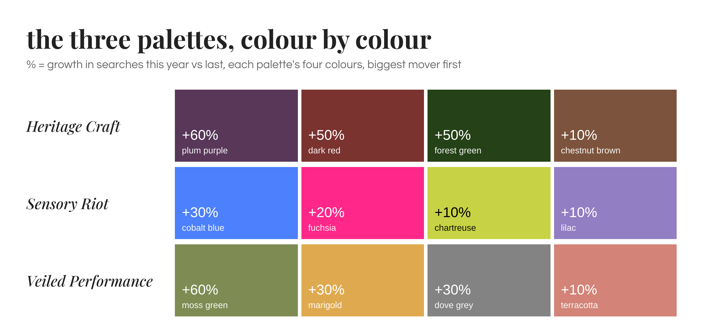
Heritage Craft: quiet luxury grows up, and for winter it comes in deep colour
Stealth wealth is evolving into heritage craft. Shoppers are moving from logos to natural fabrics, with cotton up 90% and cashmere up 80% in Google searches this year against last, because what people want is a timeless wardrobe of tried and true luxury, clothes that work as an enduring staple rather than a season's statement. My Paris SS27 tagging sees the foundation of it already: wool suiting was in 25% of all looks, the biggest material of the season. The craft side shows in jacquard jackets (up 61% in searches on last year), lace (4% of all Paris looks), shrunken blazers and peplum jackets (up 24% in Google searches over the last three months) and the equestrian tall boot look, with harness boots up 476% this year. Autumn leaves and riding boots, basically, and the palette is exactly that.
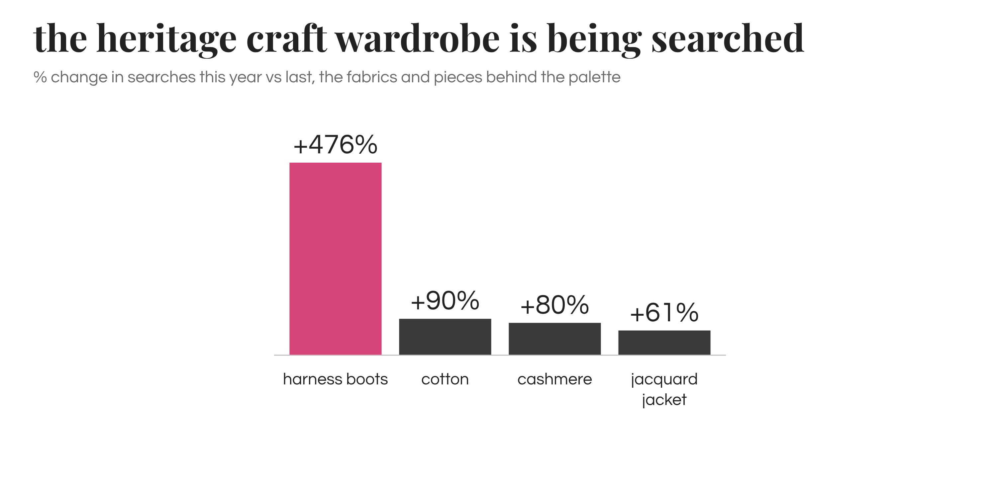
The colours, in Google searches this year against last: plum purple is the one moving, up 60%, which makes it the safest bet of the four, with dark red and forest green both up 50% behind it and chestnut brown barely moving at 10%. The context backs the order. Plum is also up 154% on TikTok, and the forecast's own numbers have it up 39% on last year while forest green, at 5% of the combined searches, and dark red, at 3%, are near the bottom of the twelve on volume, and plum itself is mid-table at 9%. Chestnut brown is the odd one out: 196M views on TikTok and a 10% rise in searches, which is the difference between a colour people watch and a colour people go looking for.
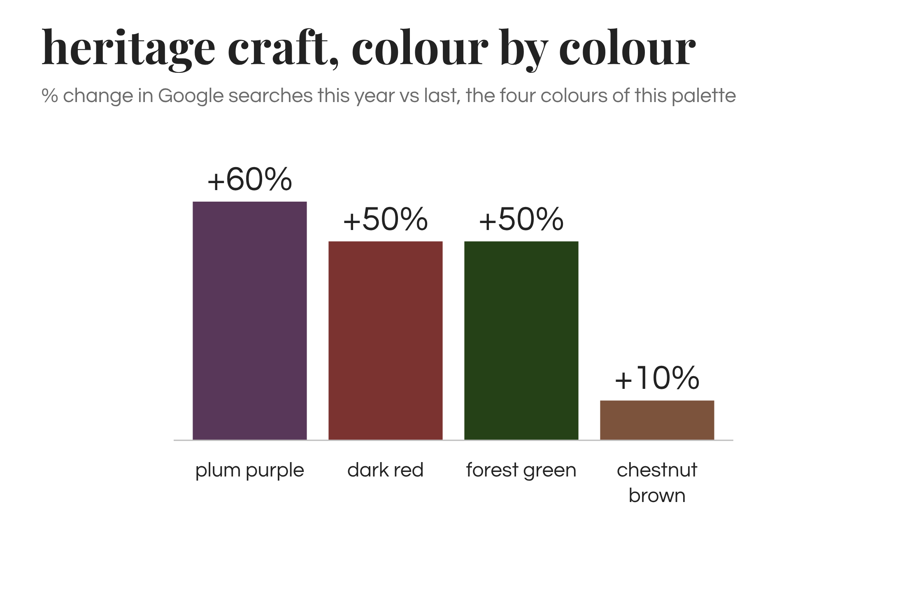
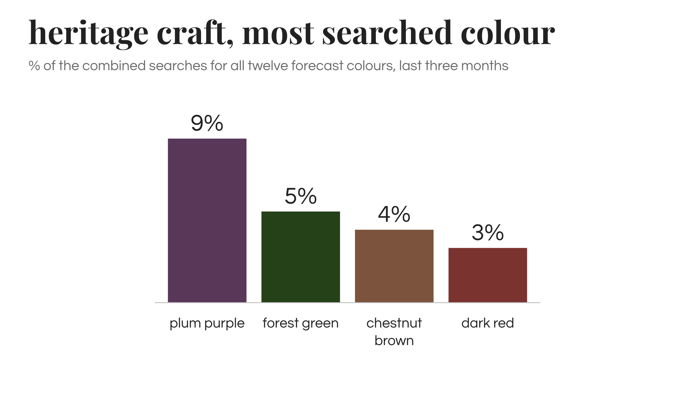
What's new in Heritage Craft. On the runway: Chanel, Ralph Lauren and Acne Studios. The key items below each carry the one number the forecast gives it, on its own measure.
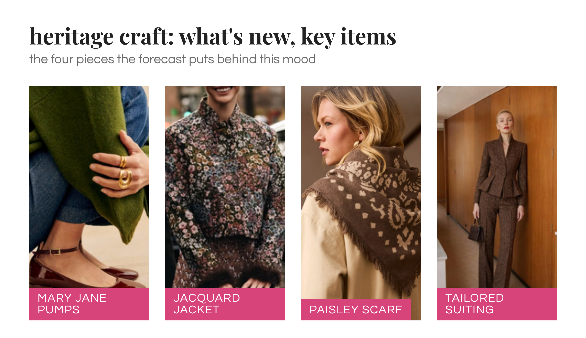
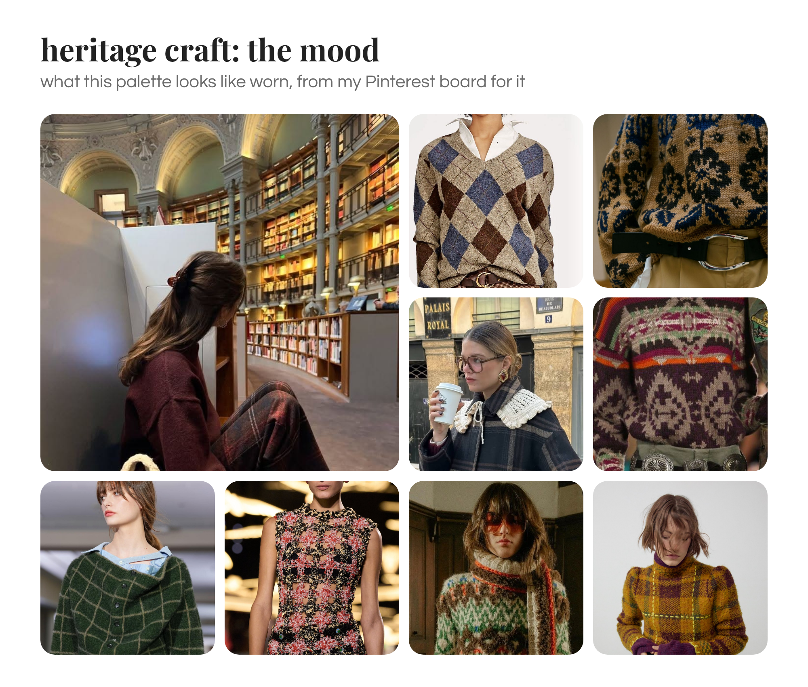
Sensory Riot: dressing in things you can actually feel
This is the maximalist palette, and the reasoning behind it is three things at once. Shoppers tired of generic AI imagery are turning to tactile, layered, clashing-print dressing that a machine can't replicate, years of quiet luxury have dissolved into corporate sameness, and effort is back, clothes that visibly took time to make. My data agrees on the direction: 31% of the Paris SS27 looks I tagged carried embellishment (ruffles, fringe, sequins, beading, embroidery, feathers or appliqué), at every one of the 16 houses, and the fringe skirt is the clearest signal, up 71% in searches on last year and the biggest mover among the items the forecast measured that way. Minimalism isn't over though, 56% of the Paris colour weight was still neutral, so the loud side grows while the quiet side stays.
The colours, in Google searches this year against last: cobalt blue is the climber at 30%, and it's crossing from fashion into beauty, then fuchsia at 20%, with lilac and chartreuse both up just 10%. The context changes the picture a little. Lilac takes 9% of the combined searches and fuchsia 6%, so lilac is a colour people already search for a fair amount that isn't growing much, while fuchsia is smaller and still moving, which is no surprise to anyone here, because I already told you pink is back, pink was in 8% of Paris looks and present at 81% of the shows I analysed, and blush pink searches are up 20% over the last three months. Cobalt's 30% matches the forecast's own 14% on last year in direction, and blue in general is up 33% over the last three months. Chartreuse is the surprise of the palette: 149M views on TikTok and only a 10% rise in searches, but 11% of the combined searches, which puts it third of the twelve, level with terracotta and behind only grey and marigold. People already look for it, they just aren't looking for it more than last year.
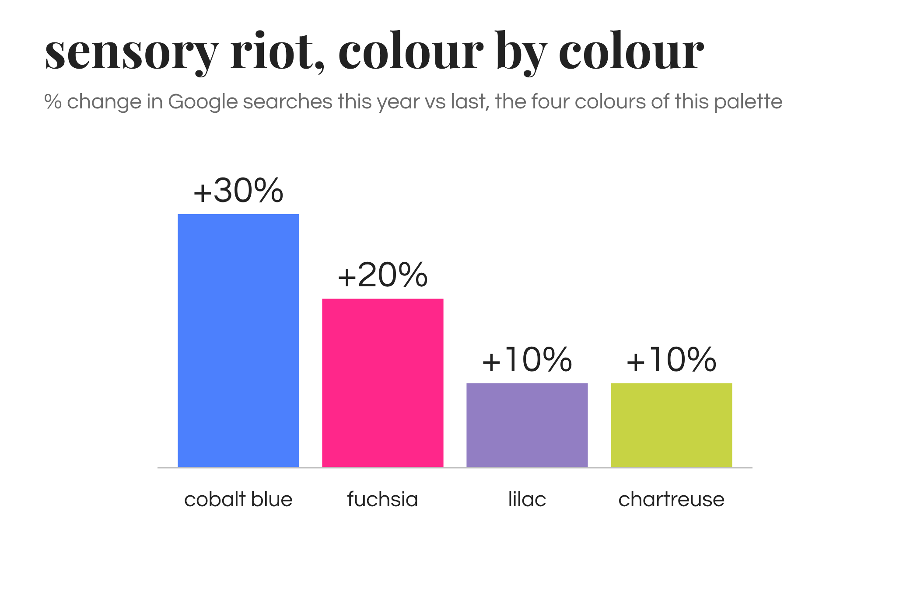
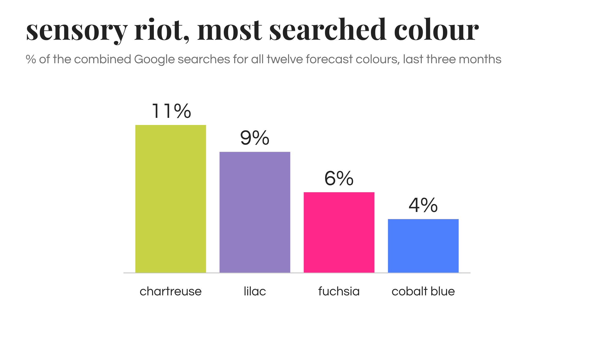
What's new in Sensory Riot. On the runway: Dries Van Noten, Dolce & Gabbana and Valentino. The key items below each carry the one number the forecast gives it, on its own measure.
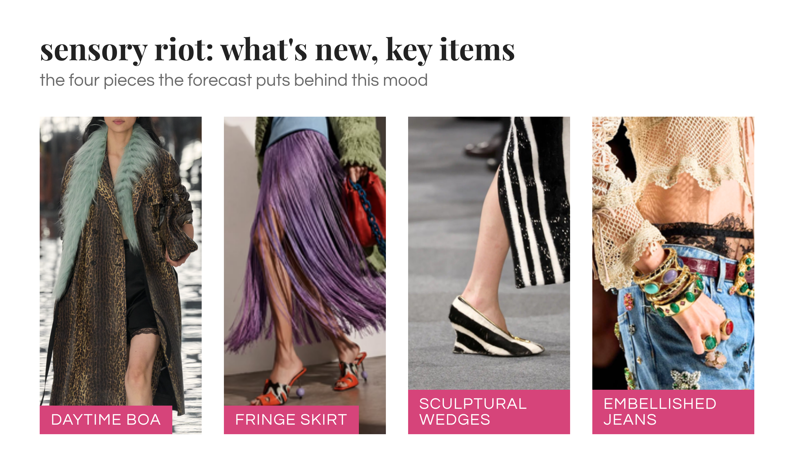
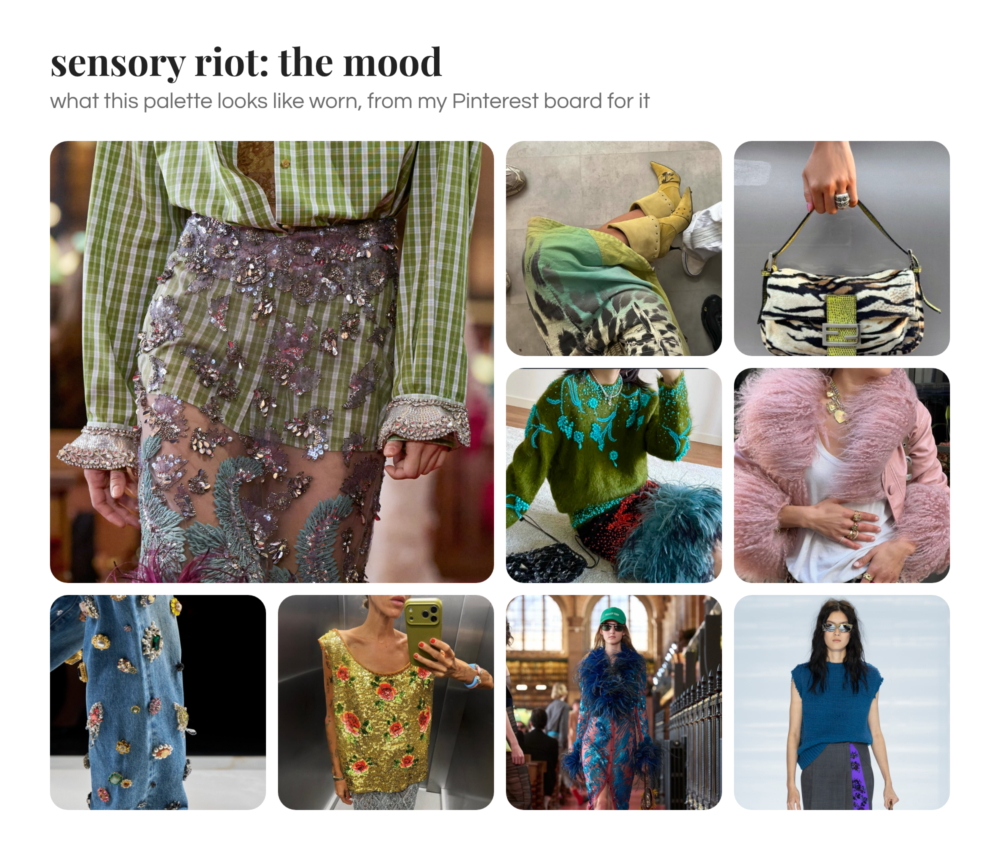
Veiled Performance: gorpcore grows up and brings an umbrella
The sporty, rain-ready palette, and the name is less poetic than it sounds. Gorpcore has matured past the sports-prep peak of 2026 into sleek utility, nylon, drawstrings, hoods, and unpredictable weather is pushing rain jackets and waterproof footwear into everyday wardrobes. On my Paris tagging it's still a one-house story, nylon and technical fabric were in 4% of all looks and 26% of Lacoste's, and PVC was Chloé alone, on six trench coats and capes. So the clothes are early, but the colours aren't.
The colours, in Google searches this year against last: moss green is the surprise, up 60%, level with plum purple as the fastest climber of all twelve, then marigold and dove grey both up 30%, and terracotta up 10%. The context: marigold is also the second most searched colour of the twelve, 16% of the combined searches, beaten only by dove grey at 19%, and grey is grey, and its neighbour amberglow is up 50% over the last three months, so it has volume and growth at once. The forecast's own figures have dove grey up 43%, moss green up 23% and terracotta up 7%, so we agree on the order at the bottom. Terracotta is the one to watch here though, because it's barely growing but already takes 11% of the combined searches, level with chartreuse, so it's big and flat rather than small, and moss green, the fastest climber, is the least searched of the twelve at 3%, so it's climbing from almost nothing. I'm sorry, but a colour whose searches grew 10% in a year is not a forecast, it's a colour that exists.
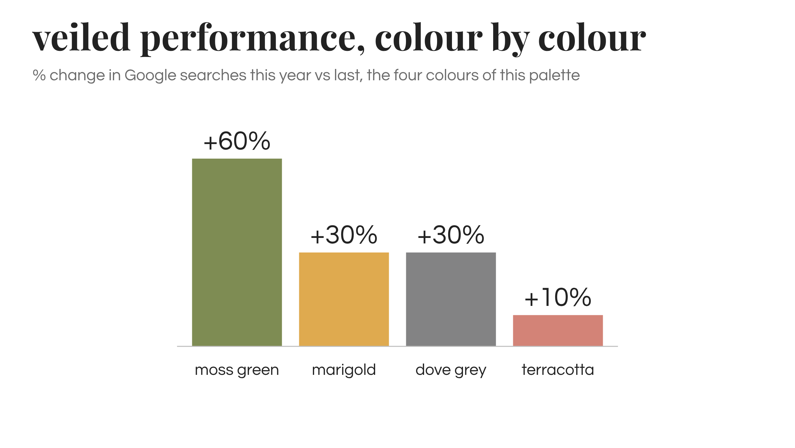
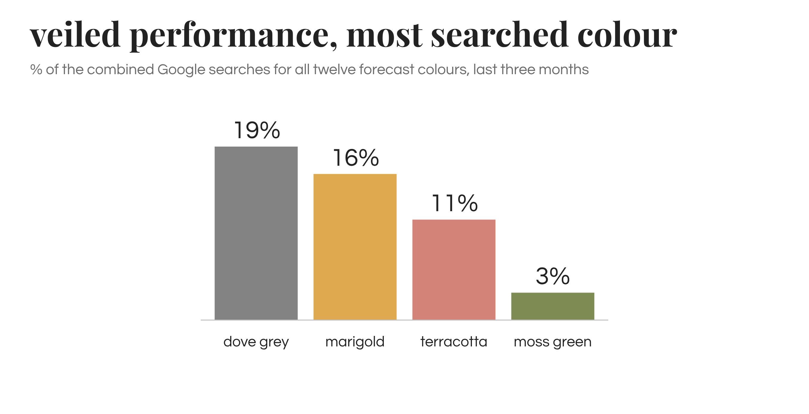
What's new in Veiled Performance. On the runway: Jane Wade, Chloé and Lacoste. The key items below each carry the one number the forecast gives it, on its own measure.
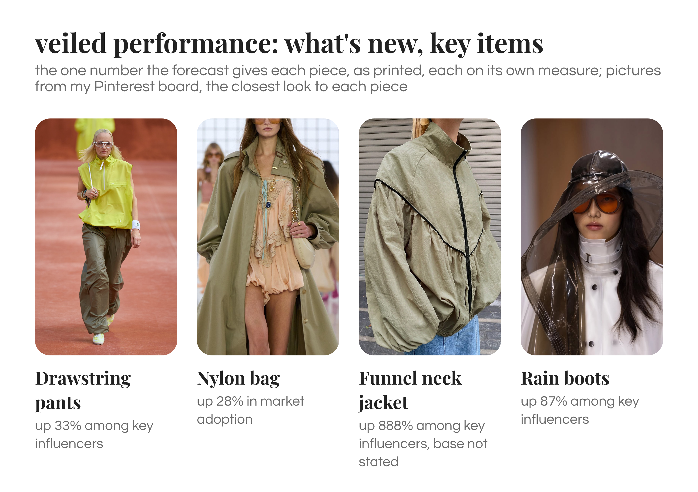
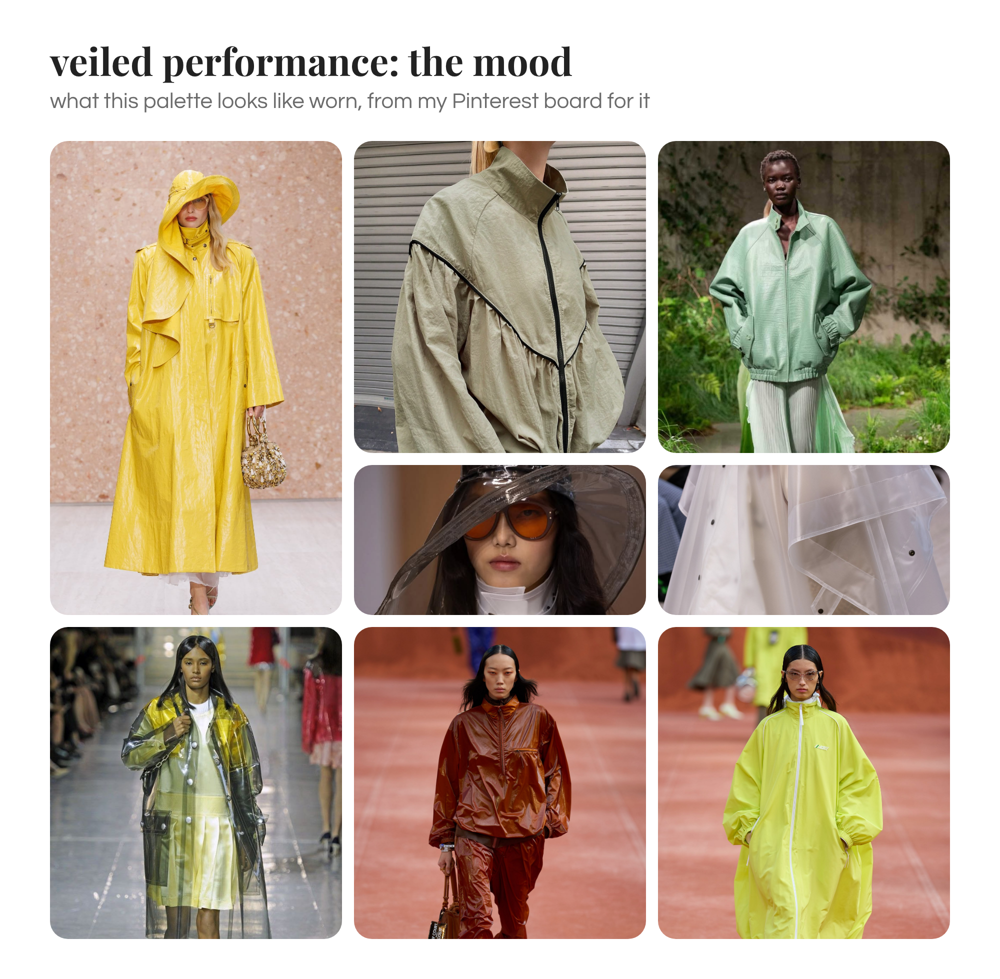
Same scale: all twelve colours, one measure
Ok, ok… twelve colours, three moods, each with a number next to it, very convincing. But the forecast measures them three different ways, a "high" search volume and an "extreme" one turn out to be two numbers barely a third apart, and only five of the twelve have a search volume at all. So I pulled all twelve myself, Google searches this year against last, and put them on one chart.
By search growth: plum and moss green lead, four colours barely move
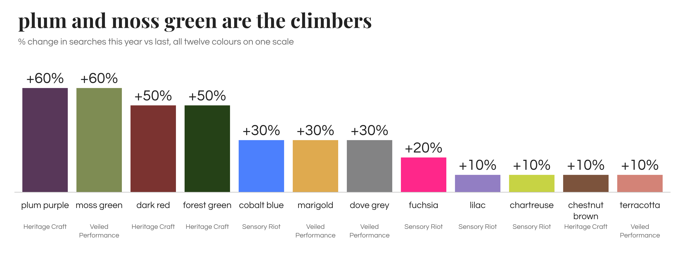
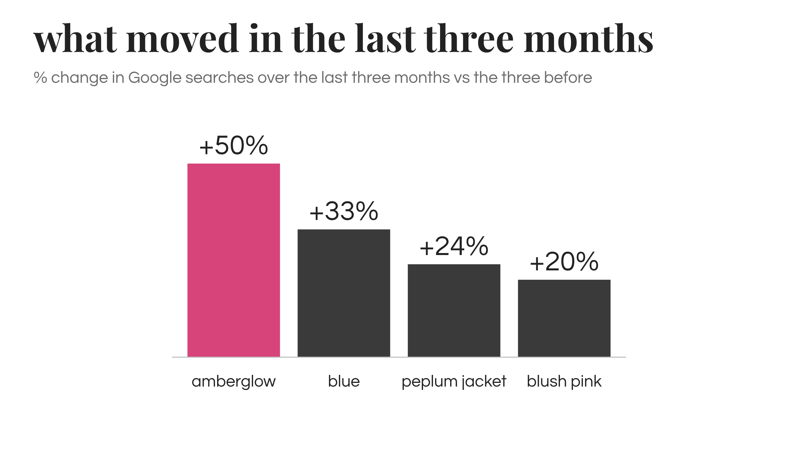
Plum purple and moss green up 60%, dark red and forest green up 50%, cobalt blue, marigold and dove grey at 30%, fuchsia at 20%, and four colours at 10%: lilac, chartreuse, chestnut brown and terracotta. So Heritage Craft is the mood that's actually moving, three of its four colours in the top four, and lilac, one of the four colours both forecasters agreed on, is the one search has least time for.
By share of searches: grey first, marigold second
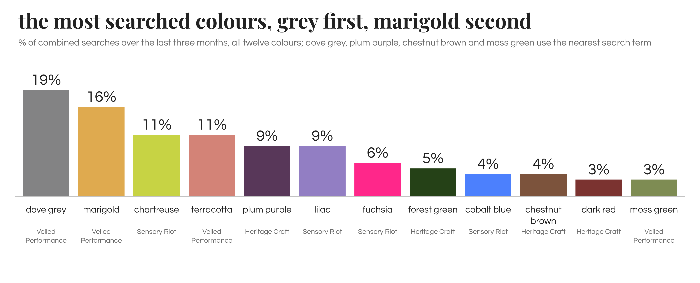

Volume is the other half. On Google search volume over the last three months, all twelve colours on one chart, dove grey takes 19% of the combined searches, marigold 16%, chartreuse and terracotta 11% each, plum purple and lilac 9%, fuchsia 6%, forest green 5%, cobalt blue and chestnut brown 4%, and dark red and moss green 3%. Four of the twelve are too specific to register as search terms, so they use the nearest one people actually type: dark grey for dove grey, deep purple for plum purple, dark brown for chestnut brown and dark green for moss green. Grey, marigold, chartreuse and terracotta are the big colours today, plum, dark red and forest green are the ones growing into next autumn, and moss green is climbing 60% from the smallest base of the lot.
What the Paris SS27 runway can already see

Spring and autumn palettes are different animals, but the forecast calls its runway references early indicators, so here is the check. Grouped into my colour families, Paris SS27 was 11% brown and beige (chestnut brown), 8% green and olive (forest and moss), 7% grey (dove grey), 5% each for pink, blue and yellow (fuchsia, cobalt, marigold and chartreuse), 3% orange and rust (terracotta), 2% red (russet) and 1% purple (plum and lilac). So green is the only forecast colour Paris was already properly wearing, and the Heritage Craft anchors, russet and plum, were close to absent, which doesn't make them wrong for autumn, it means the signal is coming from the fabric fairs, where Première Vision built its Autumn/Winter 2027/28 season on deep purples, bordeaux and mineral neutrals (FashionUnited), not from the runway yet.
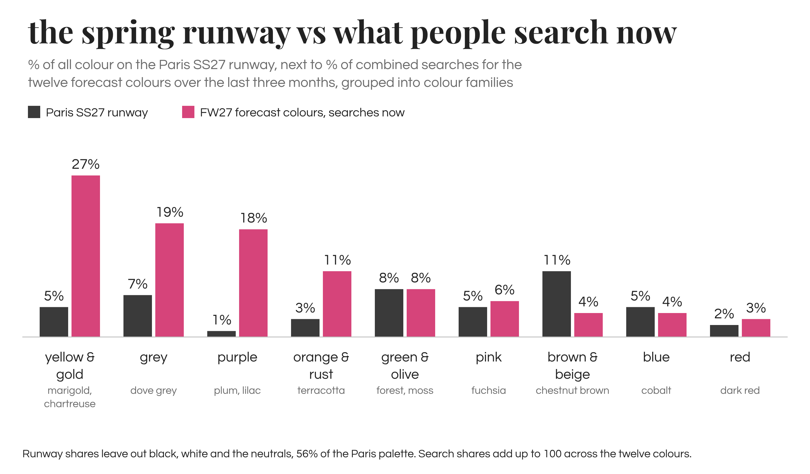
Put the two side by side and the gap is the story. Yellow and gold were 5% of the Paris colour and are 27% of the searches, purple was 1% of the runway and is 18% of the searches, grey 7% against 19%. The other way round, brown and beige were 11% of what Paris wore and take 4% of the searches, so the runway is ahead on brown and the public is ahead on yellow, grey and purple, and green is the one family where the two agree, 8% and 8%.
A few houses were already in next autumn's palette without knowing it. Lacoste is the Veiled Performance house, green 24% of its palette (khaki and bottle green), orange and rust 12% (tagged terracotta, clay and rust) and yellow 11% (mostly chartreuse), against season averages of 8%, 3% and 5%. Loewe owns marigold's family, yellow and gold at 15%, three times the season average. Miu Miu is the chestnut brown house at 20% brown and beige. Valentino did the Sensory Riot colours, fuchsia and cerise at 13% and lavender at 6%. Chanel, Maison Margiela and Dior are the dove grey houses at 15%, 16% and 13% against 7%. And russet red has no house at all: red was 2% of Paris, scarlet at Chanel and lacquer red at Lanvin, neither of them a russet.